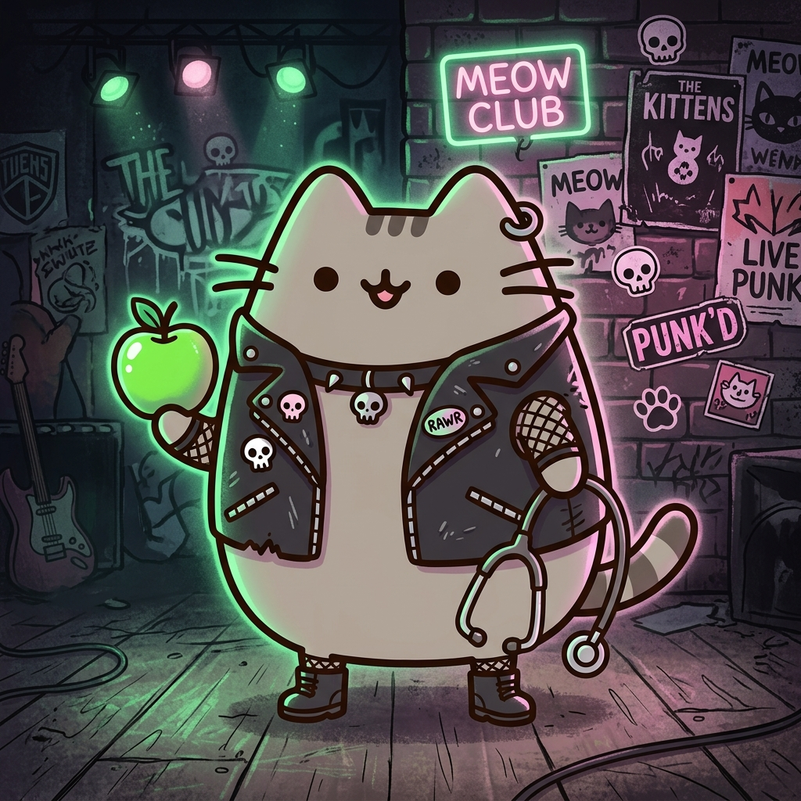

Nutricionista en formación por la Universidad Santo Tomás, actualmente desarrollando mi internado profesional. Mi formación abarca cuatro pilares fundamentales: Intervención Dietoterapéutica, Salud Pública, Gestión de Servicios de Alimentación e Investigación en Salud. Me especializo en la evaluación clínica y el abordaje nutricional integral a lo largo de todo el ciclo vital.
Bajo un fuerte compromiso ético y de responsabilidad social, mi enfoque se centra en una nutrición empática, el uso eficiente y sostenible de los recursos alimentarios, y la promoción de hábitos de vida saludables. Destaco por mi capacidad de trabajo interdisciplinario y mi proactividad para derribar mitos alimentarios mediante la educación en salud.
"La nutrición no se trata de restricciones que asustan, sino de empoderar al paciente con ciencia, empatía y sin mitos."
Aplicando conocimientos clínicos y comunitarios en un entorno real. Evaluando pacientes, diseñando planes de alimentación y derribando barreras nutricionales con empatía y ciencia.
Formación teórico-práctica con énfasis en diagnóstico nutricional, inocuidad alimentaria y educación comunitaria. Trabajo bajo el sello institucional de ética, respeto por la diversidad y rigor científico.
Educación comunitaria para interpretar sellos y elegir alimentos de forma consciente y responsable.
Diseño y evaluación de minutas alimentarias para servicios de alimentación masiva.
Operativos de evaluación nutricional enfocados en la intervención temprana y equidad en salud.
¿Lista para iniciar un tratamiento o un nuevo proyecto? Escríbeme y hagamos ciencia juntos.